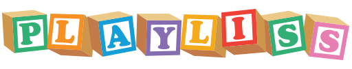
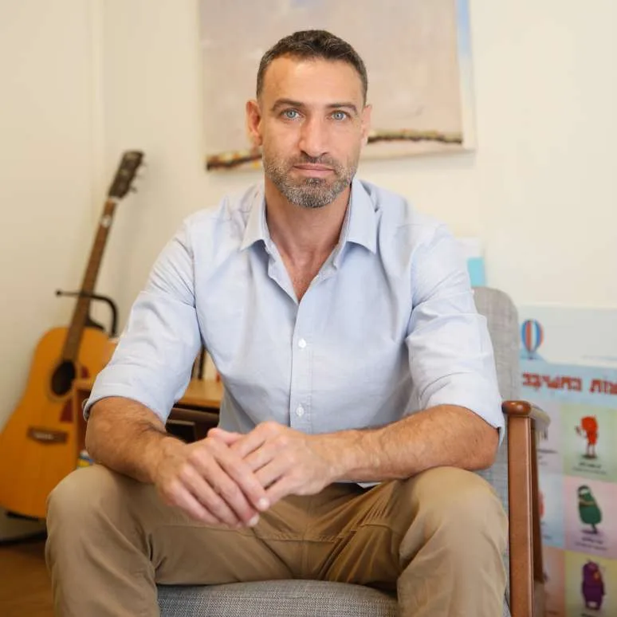

מאמנים שליטה בטיקים ובתסמונת טורט אצל ילדים ובני נוער, באמצעות משחקים ולפי פרוטוקול CBIT
טיקים הם תופעה נוירולוגית שקל לבלבל עם הרגל, חרדה או התנהגות — ודווקא הטיפול המבוסס ביותר בהם הוא התנהגותי. ה-CBIT, פרוטוקול ההתערבות ההתנהגותית המקיפה לטיקים, בנוי כולו על תרגול ומודעות — ולכן הוא מתאים במיוחד להעברה דרך משחק.
עברתי לפני כשנתיים את הסדנה המדהימה שלך "טאקי טיקים". שיתפת אותנו בקבצים עם שאלונים ומשימות שהמטופל צריך לעשות בין המפגשים — ומאז הסדנה טיפלתי במספר ילדים עם טיקים בהצלחה רבה.
בסדנה "טאקי טיקים" תצאו עם פרוטוקול ה-CBIT המלא, מותאם לעבודה עם ילדים ובני נוער עם טיקים ותסמונת טורט — בדרך משחקית, מובנת ומדויקת.
הפגישה הבאה שלכם עם ילד עם טיקים יכולה להיראות אחרת: אתם תדעו לזהות את הטיק ואת הטריגרים שלו, ולבנות עמו משחק לתרגול תגובה מתחרה שמחליפה את הטיק.

פסיכולוג חינוכי מומחה, מומחה ומדריך בהסמכה בטיפול קוגניטיבי-התנהגותי (CBT) בילדים ונוער, מטפל בביופידבק ובסכמה תרפיה. מרצה בעבר באוניברסיטה העברית בירושלים, באוניברסיטת תל אביב ובמכללה האקדמית קריית אונו.
אבחנה, הדרכה וליווי מטפלים בפרוטוקול CBIT הוא חלק מרכזי בעבודתי, ומהניסיון נולדה הדרך לשלב את העקרונות למשחק מוכר שילדים אוהבים.
למאמר שפרסמתי בפסיכולוגיה עברית: "לשחק CBT — מדריך למשחקים" ←"סדנה מומלצת ביותר, שתגרום לכל אחד להסתכל בצורה שונה על המשחקים בהם אנו משתמשים."
אני מעביר את סדנאות PlayLiss גם לצוותים — שפ"חים, מרפאות, מרכזי טיפול ומסגרות חינוך — בהתאמה לצרכי הצוות, פנים אל פנים או בזום. שיטה אחת, שפה מקצועית משותפת לכל הצוות.
להזמנת סדנה לצוות ←אימון תפקודים ניהוליים באמצעות משחקים מוכרים
לעמוד הסדנה ←פסיכולוג חינוכי מומחה,
מומחה בטיפול CBT לילדים ונוער